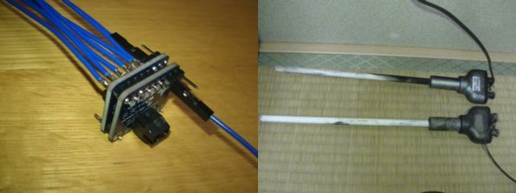

max31856モジュールを二つつなげた
せっかくmax31856をSPIにつないでいるのだから、R-TYPE熱電対を二つつなげてみた。

コード
コードは以前に書いたものをSPI0,SPI1で、選択できるようにした。しかも、それぞれがCEを番号で選べるようにした。
SPI1は、「sudo raspi-config」コマンドで出てくる画面では、SPI0しかONにならないので注意してください。
SPI1をONにするには、/boot/config.txtの設定が必要です。
#!/usr/bin/env python3
# _*_ coding:utf-8 _*_
import sys
import time
import spidev
class Max31856:
spi = None
DUMMY = 0
def __init__(self,numberOfSPI,numberOfChip):
#今回はR-TYPE専用です
#B,T,R,K,...の選択などをするべきだろう
self.spi = spidev.SpiDev()
try:
self.spi.open(numberOfSPI,numberOfChip) #/sys/bus/spi/devices/dev0.0を使う
except FileNotFoundError:
print("指定されたSPIデバイスは接続されていません")
self.spi = None
else:
self.spi.mode = 0x03 #モード3 CPOL:1 CPHA:1 ,Especially CPHA must be 1
self.spi.max_speed_hz = 1000000 #最大クロック周波数
def close(self):
if self.spi is not None:
self.spi.close()
def reset(self):
#FAULTピンのリセット
resp = self.spi.xfer2([0x80,0x17])
def read(self):
if self.spi is None:
print("SPI device has not been opend")
return { "FAULT":-1000,"HJ":-1000000,"CJ":-1000000}
else:
dummy = self.DUMMY
#通常計測
#xfer2はcsを下げたまま
#xferは1バイトごとにcsを下げ上げする
resp = self.spi.xfer2([0x80,0x55,0x35,0x00,0x3C,0xF6,0x57,0x80,0xFE,0xC0,0x00]) #設定と同時に計測するのでCR0の第6ビットを立てる
time.sleep(1) #計測を待つ
#Faultの検知
resp = self.spi.xfer([0x0f,dummy])
if (resp[1] & 0xFF) != 0:
valueFlt = resp[1]
valueHJ = ""
valueCJ = ""
else:
valueFlt = resp[1]
#熱接点の温度を読み込み
resp = self.spi.xfer2([0x0C,0x0D,0x0E,dummy])
valueHJ = resp[1] * 256 + resp[2]
if (resp[1] & 0x80) != 0:
valueHJ = -1 * (~(valueHJ - 1) & 0x7FFF) #2の補数の10進数化(これに0.0625を掛けると温度)
#冷接点の温度を読み込み
resp = self.spi.xfer2([0x0A,0x0B,dummy])
valueCJ = (resp[1] << 6) + (resp[2] >> 2)
if (resp[1] & 0x80) != 0:
valueCJ = -1 * (~(valueCJ - 1) & 0x7FFF) #2の補数の10進数化(これに0.015を掛けると温度)
return self._format(valueFlt,valueHJ,valueCJ)
def _format(self,valueFlt,valueHJ,valueCJ):
aa = { }
aa["FAULT"] = valueFlt
aa["HJ"] = valueHJ
aa["CJ"] = valueCJ
return aa
def write_file(filepath,jsonFormat):
file = codecs.open(filepath,"w","utf-8")
file.write(jsonFormat)
file.close()
if __name__ == '__main__':
args = sys.argv;
flag = True
if len(args) < 3:flag = False
elif len(args) > 4:flag = False
elif args[1] != "0" and args[1] != "1":flag = False
elif args[1] == "0":
if args[2] != "0" and args[2] != "1":flag = False
elif args[1] == "1":
if args[2] != "1" and args[2] != "2":flag = False
if flag is False:
print("Can't open Max31856")
print("Max31856 class Usage : python3 max31856.py n1 n2 [reset]")
print("n1...SPI NUMBER : 0 or 1")
print("n2...CHIP NUMBER")
print(" : 0 or 1 if SPI NUMBER is 0")
print(" : 1 or 2 if SPI NUMBER is 1")
else:
spi = Max31856(int(args[1]),int(args[2]))
if "reset" in sys.argv:
spi.reset()
spi.close()
else:
vals = spi.read()
print("Fault {}".format(vals["FAULT"]))
print("HJ {}".format(vals["HJ"]))
print("CJ {}".format(vals["CJ"]))
spi.close()
使い方
instance = Max31856(nSPI,nCHIP)
で、インスタンスが作成されます。
nSPIはSPI番号で、nCHIPはCEの後ろについている番号です。
SPI1はsudo raspi-confでは有効にできません。/boot/config.txtを編集したのち、sudo rebootしてください。
value = instance.read()
で、温度を読み込みます。
value["FAULT"],value["HJ"],value["CJ"]の３つの値が返ってきます。
熱接点の温度はvalue["HJ"]*0.0625
例接点の温度はvalue["CJ"]*0.015
で、セルシウス温度になります。（℃のこと）
value["FAULT"]が0以外の場合には、温度測定に失敗している状態です。
value["FAULT"]が2の場合にはinstance.reset()を行うことで、測定可能になる場合がほとんどですが、
重大な欠陥がある場合には、何回やっても測定可能にはなりません。
max31856のデータシートを参考にして、修繕してください。
value["FAULT"]が、0以外の場合は失敗していることを示しています。
以上
がらめきドットコムPowered by RaspberryPi3B+ Raspbian stretch